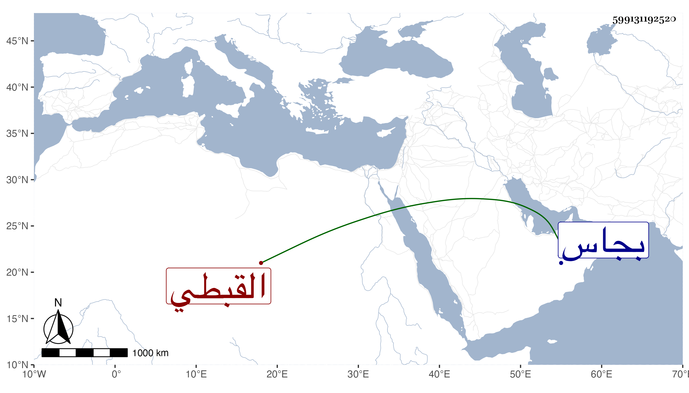

0902Sakhawi.DawLamic.ITO20230111-ara1.EIS1600.599131192520
Biography ID: 599131192520
495
عبد الرزاق وسماه شيخنا في أنبائه عبد الوهاب بن عبد الله بن عبد الوهاب التاج بن الشمس بن العلم القبطي والد الكريمي عبد الكريم ويعرف بابن كاتب المناخات وأمه أم ولد رومية . نشأ فتمهر في الكتابة والمباشرة وخدم بذلك عند غير واحد من الأعيان والأمراء ثم عمل استيفاء المفرد ثم نظره بعد عزل سميه التاج بن الهيصم الماضي قريبا في المحرم سنة أربع وعشرين ثم استرجع قبل انفصاله عن دهليز القصر وهو بخلعته فخلعت وأفيض عليه تشريف الوزر مع مزيد تمنعه عوضا عن البدر حسن بن نصر الله فأقام إلى ذي الحجة من التي تليها ثم عزل لعجزه عن القيام بالكلف واختفى من يومه فقرر عوضه أرغون شاه النوروزي الأعور مضافا للاستادارية ولم يلبث أن ظهر وطلع إلى السلطان فعفا عنه ، ولزم داره بطالا على مال قام به حتى مات في ليلة الجمعة حادي عشري جمادى الأولى سنة سبع وعشرين ودفن من الغد بتربة بجاس ، أثنى عليه العيني فقال : كان هينا في وزارته غير خائض في الظلم الشديد عنده شفقة وخوف ولم يسمه وقال شيخنا إنه باشر المفرد مدة طويلة ثم الوزر ولما صرف صودر ، قال وكان ضخما طوالا ريض الاخلاق عارفا بالكتابة ، زاد غيره عنده حشمة ورياسة وسلامة باطن ويقال أن ولده لما استقر في الوزارة في حياته ودخل عليه قال له أنا لما وليت كان معي نيف على خمسين ألف دينار فأنفدتها وركبتني الديون وأنت رجل فقير فمن أي شيء تسد فقال له من أضلاع المسلمين فصاح به وقال اخرج من وجهي . عفا الله عنه .
